Generative Adversarial Network was pre-trained on over 20,000 real sequences. The hyperparameters were
chosen based on the training loss of the generator and the discriminator, the converging gradient penalty,
and the resemblence of the generated outputs to the real sequences.

In particular, notice the shift of the biochemical properties of the generated sequences as compared to
the real ones. These properties were analyzed using metrics the model has never, using a
protein analysis
software.
seen but is still able
to match almost all parameters after 20 epochs.